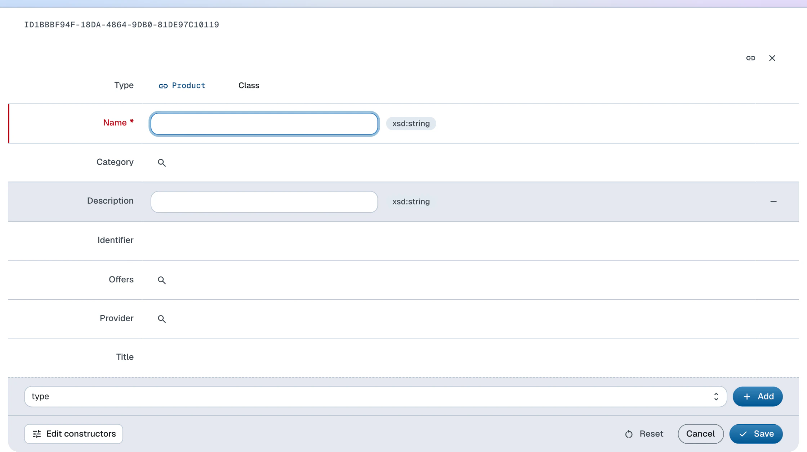

Change model
Define classes, attach SPIN constructors that drive create forms, and add constraints that validate instances
To manage instances, you first need classes that represent them in your dataspace's model. Not only will they serve as RDF types of the instances, but they will also have constructors attached that define the default properties and their (data)types for that class.
The model is managed in the administration dataspace of a dataspace. Head there by clicking the in the navigation bar and then choosing Administration.
In order to manage the access control, or the model of a dataspace, the agent needs to be a member of the owners group.
This guide uses the Northwind Traders model and its schema:Product class as the example — the demo app ships exactly this constructor and constraint in its namespace ontology, so the finished result can be compared against admin/model/ns.ttl.
Create a constructor
Use the following SPARQL CONSTRUCT query as a constructor for the Product class. The typed blank nodes tell the form which control to render: a string input
for the name and identifier, resource typeaheads for the category and supplier.
PREFIX schema: <https://schema.org/>
PREFIX xsd: <http://www.w3.org/2001/XMLSchema#>
CONSTRUCT
{
$this schema:name [ a xsd:string ] ;
schema:identifier [ a xsd:string ] ;
schema:category [ a schema:ProductGroup ] ;
schema:provider [ a schema:Corporation ] .
}
WHERE {}
In the administration dataspace, follow these steps:
- Click the Create dropdown at the bottom of the page
- Click on CONSTRUCT in the dropdown list that appears
- Switch the Blank node dropdown to URI and enter https://localhost:4443/ns#ProductConstructor
- Fill out the mandatory fields in the form:
- Label
- Enter Product constructor
- IsDefinedBy
- Select Namespace from the list — the dataspace’s namespace ontology, in which the query is defined
- Text
- Enter the SPARQL
CONSTRUCTquery string
- Click Save
Save the query in a file, e.g. queries/construct-product.rq. With the CLI installed and the LDH_* variables set:
base="https://localhost:4443/"
admin_base="https://admin.localhost:4443/"
ldh admin add constructor \
-b "$admin_base" \
--uri "${base}ns#ProductConstructor" \
--label "Product constructor" \
--query-file queries/construct-product.rq \
"${admin_base}ontologies/namespace/"
The model lives in the administration dataspace, whose origin is the dataspace origin
with an admin. prefix — so -b (overriding the LDH_BASE default) and the target document URL both use $admin_base, because admin commands target the admin app's base URI, while the ontology terms
being defined keep the end-user origin.
Follow the same steps for Category (schema:ProductGroup) if you want its instances to be creatable too.
Create a constraint
To control data quality, you may want to make some of the instance properties mandatory.
For example, a schema:Product instance should always have a schema:name value.
In the administration dataspace, follow these steps:
- Click the Create dropdown at the bottom of the page
- Click on Missing property value in the dropdown list that appears
- Fill out the fields in the form:
- Label
- Enter Missing schema:name
- IsDefinedBy
- Type Namespace into the input (which provides autocomplete)
- Select Namespace from the list — the dataspace’s namespace ontology, in which the query is defined
- Arg1
- Enter https://schema.org/name
- Click Save
ldh admin add property-constraint \
-b "$admin_base" \
--uri "${base}ns#MissingName" \
--label "Missing schema:name" \
--property "https://schema.org/name" \
"${admin_base}ontologies/namespace/"
Create classes
In the administration dataspace, follow these steps to create the product class:
- Click the Create dropdown at the bottom of the page
- Click on Class in the dropdown list that appears
- Switch the Blank node dropdown to URI and enter https://schema.org/Product — reusing the schema.org term rather than minting your own
- Fill out the mandatory fields in the form:
- Label
- Enter Product
- IsDefinedBy
- Select Namespace from the list — the dataspace’s namespace ontology, in which the class is defined
- Constructor
- Type Product constructor into the input (which provides autocomplete)
- Select Product constructor from the list — this is the query you created beforehand
- Click Save
ldh admin add class \
-b "$admin_base" \
--uri "https://schema.org/Product" \
--label "Product" \
--constructor "${base}ns#ProductConstructor" \
--constraint "${base}ns#MissingName" \
"${admin_base}ontologies/namespace/"
What ended up in the model
The three steps added the following description to the namespace ontology document — the same wiring the demo app ships:
schema:Product spin:constructor <https://localhost:4443/ns#ProductConstructor> ;
spin:constraint <https://localhost:4443/ns#MissingName> ;
rdfs:label "Product" .
<https://localhost:4443/ns#ProductConstructor> a ldh:Constructor ;
rdfs:label "Product constructor" ;
sp:text "CONSTRUCT { $this schema:name [ a xsd:string ] ; … } WHERE {}" .
<https://localhost:4443/ns#MissingName> a ldh:MissingPropertyValue ;
rdfs:label "Missing schema:name" ;
sp:arg1 schema:name .
From now on, Product can be chosen as the Type of a new Instance created from the Create dropdown of the end-user dataspace, and its form is then generated from the constructor, offering title, name, identifier, description, category, supplier and offer controls. A submission without a name is rejected with 422 Unprocessable Entity, carrying the constraint violation.
